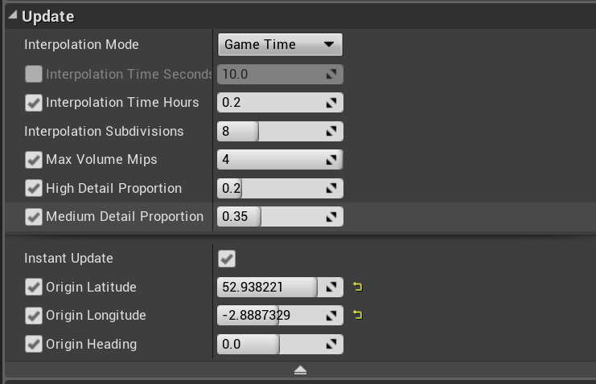

Sky Tutorial¶
Geographically Accurate Sun Positioning¶
Our Sun’s Position is realistically located in relation to the world based off longitude, latitude along with date and time. The date settings are available in the Sky Layer of the Sequencer, while the Longitude, latitude and heading values are located in the Update section on the trueSKYSequenceActor.
Sky Colours¶
You can manually set the colour of the horizon or the upper sky(Zenith) using the Sky Keyframes. Enable Store as Colours and then set your colours manually. This is a great way to create unique, alien landscapes.
Make sure to apply the colour to all your keyframes if you want it to be throughout the whole day cycle, or set different colours for different times, and watch as the Sky blends as time progresses.
Unlinked Time and Daytime¶
We can unlink time and daytime, causing the keyframe’s link simul::sky::BaseKeyframe::time timeendlink value is arbitrary - it could represent the real time in seconds, or some other scale.
Furthermore, while the keyframes will be sorted so that they are in ascending order of link simul::sky::BaseKeyframe::time timeendlink, daytime will have no such restriction. You could have a midday keyframe, followed by sunset, followed by midday again. Here, we set all the keyframes to be at daytime=0.25 (6am):
simul::sky::SkyKeyframer *sk=environment->skyKeyframer.Get();
sk->SetLinkKeyframeTimeAndDaytime(false);
for(int i=0;i<sk->GetNumKeyframes();i++)
{
simul::sky::SkyKeyframe *k=(simul::sky::SkyKeyframe *)sk->GetKeyframe(i);
k->daytime=0.25f;
}
You could also disable automatic Sun Position, in which case daytime will have no effect on sun position.
The unlinked time mode is particularly suitable to situations where you will use the Simul API to change conditions on the fly. At any given time, two keyframes are being used for rendering, and the next one along will be partially updated. So the properties of the fourth keyframe can be changed without having any need for recalculations.
simul::sky::SkyKeyframe *k=environment->skyKeyframer->GetNextModifiableKeyframe();
k->haze=20.f;
This works just as well with linked as with unlinked times.
Manual Sun and Moon Position¶
You can manually set the sun and moon’s position at a given time, to get the exact angle of lighting you are after. To do this, you need to access your sky keyframe within the sequencer, then under the “sun and moon” header, untick the Automatic Sun Position checkbox (or the Automatic Moon Position checkbox).
Once this is done you can use the slider below the checkbox to assign the height of the sun position, and use the circular dial to the right of the slider to asign the horizontal positioning of the sun.
Moon Texture (Legacy)¶
You can apply a png to the moon to make it whatever object you like, and will go through phases based on the sun’s position. This is a legacy setting - and only functions within the 4.1a. Documentation for 4.2a’s multimoon setup can be found here.